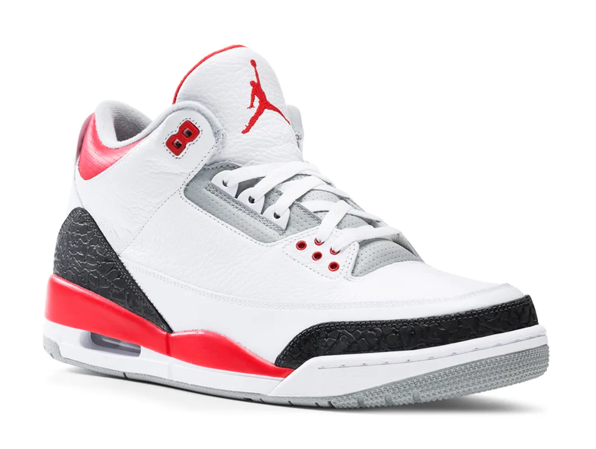

The Air Jordan III released in 1988 and retailed for $100. Michael Jordan wore them during the 1987-88 NBA season. Unlike today’s standard barrage of colorways for every signature shoe, the Air Jordan III released in only four original colors, including White/Cement Grey (that Michael won the ‘88 Slam Dunk contest in), White/Fire Red, “True Blue”, and the most famous colorway of Black/Cement Grey.
The most important “first” of all for the III is that it was the first Air Jordan designed by the now legendary Tinker Hatfield. As the story goes, Michael was considering leaving Nike after 1987—until he saw what Tinker whipped up for his third model. Would the Air Jordan line have continued without Mr. Hatfield?
The real killer here is the midsole. Polyurethane is still used today for insoles but rarely for midsoles. Even when being used in today’s footwear, it’s accompanied by some sort of foam which absorbs most of the impact before it reaches the PU insole. Had the cushion been more protective, I think the Air Jordan III would have made a very good performance shoe.

There can be no valid argument made that the Air Jordan III is not one of the greatest sneakers ever made. Try to find somebody that doesn’t list it in their top five favorite Air Jordan ever. Good luck! Thanks to Tinker’s once radical but now timeless design, the Air Jordan III is a bona fide elephant-printed masterpiece, and a shoe that will forever be among our culture’s very best. Michael Jordan also carried the culture all the way with his astounding NBA performances in them.
